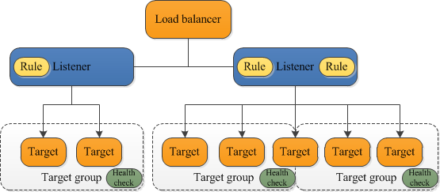
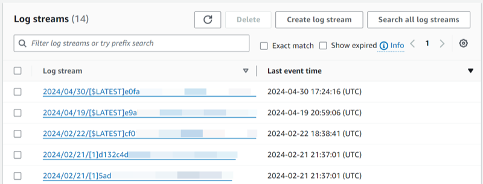

PR801 — Escalar y observar¶
Qué es esto
Guía de apoyo al lab. No sustituye el enunciado ni la rúbrica del Tema 8.
Entrega: Cómo entregar → PR801.md (o ZIP + img/).
Antes de empezar¶
- Lab Academy del Módulo 10 en Cloud Foundations: Ejercicio de laboratorio 6 - Escalado y balanceo de la carga de su arquitectura.
- Región fija del lab (la que indique el enunciado).
- Durante el lab: ASG con mínimo ≥ 1 (según enunciado) para poder probar.
- Al acabar: mínimo = 0 (y deseado = 0) o termina las instancias — si no, facturas.
- La alarma debe ser de EC2 / ALB / grupo de destino (CPU o UnHealthyHostCount), no logs de una función Lambda.
- Docs: Create an Application Load Balancer, Create an Auto Scaling group, Create a CloudWatch alarm.
Recorrido orientativo¶
-
Abre la consola en la región del lab. Localiza (o crea, según el enunciado) las instancias o la plantilla de lanzamiento que usarás como destinos. Anota las AZ y las subredes.
-
Crea o completa el grupo de destino (target group) con el protocolo y el puerto de la comprobación de estado que marque el lab (p. ej. HTTP
/o/health). Registra las instancias si el enunciado lo pide en este paso. -
Crea el Application Load Balancer. Elige subredes en al menos dos AZ si el lab lo pide; asocia el listener (80/443) al grupo de destino y el grupo de seguridad del balanceador según el enunciado. Deberías ver el ALB en estado activo.
-
En el grupo de destino → destinos: al menos un destino sano (healthy). Captura ese estado (es el criterio ALB de la rúbrica). Si el enunciado pide probar la página por el DNS del ALB o por cada instancia, hazlo y deja una captura sin Account ID ni claves.
-
Crea o ajusta el grupo de Auto Scaling: mínimo, deseado y máximo coherentes (mínimo ≥ 1 mientras pruebas). Vincula la plantilla de lanzamiento y el grupo de destino según el enunciado. Anota los tres valores en el
.md. -
Comprueba que el tráfico se reparte entre destinos sanos y que el grupo reacciona a la carga o a una instancia caída, según indique el enunciado (más instancias, sustitución, etc.). No hace falta forzar un escenario que el lab no pida.
-
Crea una alarma CloudWatch (o captura una métrica) de EC2 (p. ej.
CPUUtilization) o del ALB / grupo de destino (UnHealthyHostCount/ HealthyHostCount). No elijas un log group de Lambda como evidencia de esta práctica. Deberías ver la alarma en OK o en alarma según el umbral. -
En el
.md, en unas líneas: el ALB reparte a destinos sanos; el ASG mantiene la capacidad; la alarma te avisa. Una captura de alarma o métrica basta junto a la del destino sano. -
Limpieza: baja mínimo (y deseado) a 0 o termina las instancias. Captura el ASG o las instancias al final. Borra ALB, grupos de destino, ASG y alarmas según el orden del lab. End Lab.
Si la comprobación de estado apunta a una ruta que no existe, el destino quedará no sano y el ASG puede sustituir instancias sin arreglar la app: mira la ruta del check antes de subir el mínimo. CloudWatch y CloudTrail no son intercambiables: aquí quieres métrica o alarma, no el historial de llamadas a la API. Al cerrar, un ASG con mínimo = 2 olvidado es la forma más típica de llevarse un susto en la factura del Learner Lab.
Qué entregar para cada criterio de la rúbrica¶
| Criterio | Qué dejar en el .md |
|---|---|
| ALB | Captura del grupo de destino con al menos un destino sano |
| ASG | Mínimo, deseado y máximo anotados durante el lab |
| CloudWatch | Alarma o métrica de EC2, ALB o grupo de destino (no logs Lambda) |
| Limpieza | Mínimo = 0 o instancias terminadas, con captura final |
Capturas¶
Las figuras de esta página son de apoyo. En tu .md del lab usa capturas propias del mismo paso; sin Account ID, claves ni contraseñas.


Errores frecuentes¶
- Comprobación de estado inútil (todo sano con la app caída o ruta inexistente).
- ASG con mínimo = 2 y olvidar bajarlo al cerrar.
- Mirar la CPU en CloudTrail en lugar de CloudWatch.
- Pegar logs de Lambda como «observabilidad» de esta práctica.
- Diagrama sin captura de destino sano ni de alarma o métrica.
- Dejar el ALB y el ASG creados tras End Lab (revisa la región del lab).
Limpieza¶
ASG mínimo = 0 (y deseado = 0) o termina las instancias; borra ALB, grupo de destino y alarmas según el lab. Comprueba que no queda capacidad ociosa. End Lab.